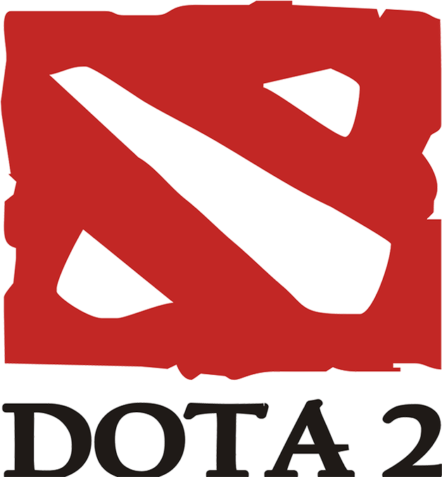

Hero "Mogambo" Alom is a renowned Dota 2 player in the US East region. Originally from
Ason Chowk, Nepal, Hero has made a reputation for himself as one of the most stubborn
carries in the game. His toxic behavior towards his teammates combined with endless flaming of his opponents
almost always ensures victory for him in a dota game.
Although he has never openly admitted it, there has been a widespread rumor that he is a huge fan of s2. He
is also quoted by several to be an prodigious computer programmer
and to have a great problem solving skill.
Early Days
Hero Alom started studying in Modern Indian School, one of the most prestigious schools in the region he is from. This is where he met his BFF s2 and their friendship began.
During lunch breaks they used to hold hands and head towards the canteen and order Momo, which is a one of the favorite Nepali snacks, and share the same plate of momo. This friendship is what
gave birth to the one of the most cancerous dota players in North America(NA) region.

Dota 2 Career
Hero Alom initially started playing dota to help his best friend forever (BFF) s2 improve
on the game.But he realised his true potency one he started winning
games over and over while playing solo. After coming to the US, he soon realised that he was too toxic for
the game. Hero Alom saw this as an oppurtunity to ruin 9 other players days.
He continued to play and be toxic in the dota community as if it was a single player game. He can be found
in the dark jungles of the dire side of the map typing "Da" in all chat.
He can also be found cussing at people whenever they ban the hero Pudge in any of his games. His signature heroes are Techies, Pudge and Ogre Magi.
Programming Skills
Hero is very proficient in multiple programming languages. He can code blindfolded in
Python, Java, and Javascript. He has made several contributions to the Open Source Society anonymously.
Despite his lack of ability to spell proper nouns correctly, he amazingly keeps tracks of the odd names he gives to various
functions and classes during his programming sessions. He is also enthusiastically learning Angular and React JS.